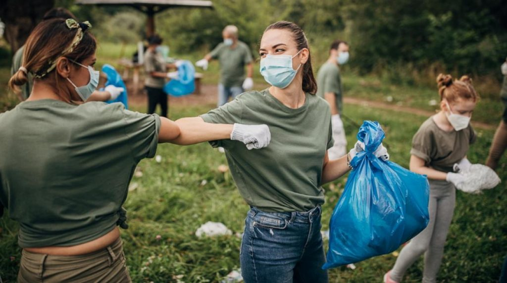
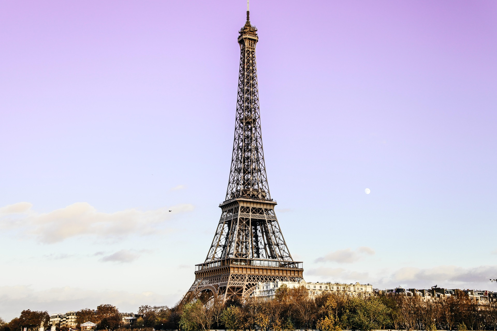

Activitati:
Forex , si in ce consta defapt acest domeniu ?
În câteva cuvinte, Forex – cunoscut și ca FX sau piața valutară – reprezintă schimbul unei valute cu o altă valută la un preț agreat. Aceasta este o piață descentralizată, în cadrul căreia sunt tranzacționate valutele globale, și nereglementată, de negociere directă (OTC), ceea ce înseamnă că tranzacțiile sunt rapide, ieftine și sunt efectuate fără supravegherea unui operator de piață.
Forex este cea mai tranzacționată piață din lume, cu un randament pozitiv de 5.000 miliarde $ pe zi. Aceasta înseamnă că prețurile valutelor fluctuează constant în valoare, una în raport cu cealaltă, creând multiple oportunități de trading de care investitorii pot beneficia.
Este rar ca oricare două valute să aibă valori identice și, de asemenea, este rar ca oricare două valute să își mențină aceeași valoare relativă pentru mai mult timp.
Voluntar
«Voluntariatul este un act voluntar al unui individ sau al unui grup care acordă liber timp și muncă pentru serviciul în folosul comunității. Mulți voluntari sunt instruiți în mod special în domeniile în care lucrează, cum ar fi medicina, educația sau salvarea în situații de urgență. Voluntariatul reprezintă participarea voluntarului persoană fizică la activități de interes public desfășurate în folosul altor persoane sau al societății, organizate de către persoane juridice de drept public sau de drept privat, fără remunerație, individual sau în grup. Alții vin în sprijinul persoanelor fără ajutor să facă voluntariat ca urmare a unei dezastru natural. În zilele noastre, un tip comun de voluntari este turismul voluntar.
Studiez limba franceza
«Alianța Franceză din Moldova este primul centru de studiere a limbilor străine din țară cu peste 3 500 de elevi anual. Aceasta propune cursuri de franceză, dar și cursuri de română și rusă pentru expatriați, cursuri de pregătire pentru examenele Cambridge English, de asemenea propune sejururi lingvistice atractive, atât pentru străinii care doresc să studieze limba română sau rusă în Republica Moldova cât și pentru tinerii moldoveni care își doresc perfecționarea limbii franceze în Franța.
65 de profesori, recunoscuți pentru competențele lor, predau limba franceză la Chișinău, Bălți, Nisporeni și Cahul.
Alianța Franceză este unicul centru de examene de franceză acreditat din Republica Moldova : DELF/DALF, TCF/TCF ANF, e TEF, TEFaQ și TCF Quebec, cerute de Ministerul Emigrării Diversității și Incluziunii (MIDI) din Quebec în cadrul unei cereri de viza pentru Quebec, e-TEF, e-TEF Canada și e-TEFaQ.
De asemenea, aceasta este Centru autorizat pentru examenele Cambridge English.
Aceste examene, ca și examenele sau testele de franceză, vă permit să fiți eliberați de la proba de limbă străină din cadrul bacalaureatului.
Imagini :

